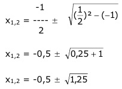

Aufgabe 31
In welchen Punkten schneiden sich die Parabel
y = x2 + 2x und die Gerade y = x + 1?
Rechnerische Lösung:
Gleichsetzen:
x2 + 2x = x + 1 |-x
x2 + x = 1 | -1
x2 + x - 1 = 0
p, q – Formel:
p = 1 ; q = -1

x1,2 = -0,5 ± 1,12
x1 = -0,5 - 1,12 = -1,62
y1 = -1,62 + 1 = -0,62
x2 = -0,5 + 1,12 = 0,62
y2 = 0,62 + 1 = 1,62
P1(-1,62|-0,62) ; P2(0,62|1,62)